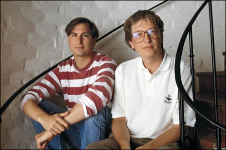

Chương 15

rong lĩnh vực thiên văn học, hiện tượng hệ nhị nguyên xảy ra khi hai ngôi sao có chung một quỹ đạo do sự tương tác của lực hấp dẫn. Lịch sử loài người cũng từng chứng kiến những tình huống tương tự, những mối quan hệ hợp tác và đối đầu của những cặp đôi “siêu sao” như Albert Einstein và Niels Bohr trong lĩnh vực vật lý học thế kỷ XX, hay Thomas Jefferson và Alexander Hamilton trong thời kỳ đầu chính trường Mỹ. Bắt đầu vào cuối những năm 1970, thời kỳ ba mươi năm đầu của kỷ nguyên máy tính cá nhân thì chúng ta lại có cơ hội chứng kiến hai ngôi sao công nghệ đầy nhiệt huyết, cùng bỏ dở học đại học, cùng sinh năm 1955 “quay quanh một trục”.

GATES VÀ JOBS 1991
Mặc dù có chung một tham vọng lớn với công nghệ và kinh doanh nhưng Bill Gates và Steve Jobs lại có hoàn cảnh, năng lực và tính cách khác nhau. Cha của Gates là một luật sư danh tiếng ở Seattle, còn mẹ ông là một nhà lãnh đạo cộng đồng uy tín. ông trở thành một người đam mê công nghệ khi theo học một trường tư tốt nhất trong khu vực, trường Lakeside High. Tuy nhiên, Gates chưa bao giờ tỏ ra là một người nổi loạn, lập dị, hay một kẻ thuộc trào lưu phản văn hóa, thậm chí một kẻ đi tìm kiếm những chuẩn mực về tâm linh. Thay vì việc chế tạo ra những chiếc hộp quay số điện thoại (Blue Box) để chơi khăm những công ty viễn thông như Jobs, Gates thiết kế ra chương trình lập thời gian biểu các lớp học của trường, một phi vụ đã giúp ông có thể gặp mặt được đúng những cô bạn gái mà ông nhắm tới. Ngoài ra, ông cũng viết chương trình đếm lưu lượng xe ô tô cho những kỹ sư giao thông ở địa phương, ông từng theo học đại học Harvard và đã quyết định bỏ dở việc học của mình, nhưng không phải để tìm kiếm sự giác ngộ nơi một “đấng tối cao ở Ấn Độ xa xôi mà để khởi nghiệp một công ty sản xuất phần mềm máy tính của riêng mình.
Không giống Jobs, Gates có khả năng lập trình tốt và suy nghĩ của ông thực tế, quy củ hơn Jobs. Hơn nữa, Gates có khả năng phân tích dữ liệu. Jobs thì ngược lại, hành động theo cảm tính, lãng mạn hơn nhưng lại có bản năng nhạy cảm với quyết định sáng tạo ra những công nghệ dễ sử dụng và thiết kế tinh tế cùng giao diện thân thiện với người dùng, ông có niềm đam mê với sự hoàn hảo, điều khiến ông luôn đòi hỏi một cách nghiêm khắc và ông quản lý dựa trên khả năng thuyết phục cũng như sự tùy tiện và bừa bãi của cảm xúc. Gates thì làm việc có phương pháp rõ ràng, ông giữ lịch xem xét lại quá trình chế tạo sản phẩm một cách nghiêm túc và thường xuyên. Tại các buổi thảo luận này, ông sẽ cắt trúng vấn đề với kỹ năng quan sát và phân tích tỉ mỉ. Cả Jobs và Gates đều thô lỗ nhưng với Gates, người đã sớm bắt đầu sự nghiệp của mình với tư cách một người đam mê công nghệ theo chuẩn mực Asperger thì hành động của ông bớt tính cá nhân và dựa trên suy nghĩ lý trí hơn. Jobs sẽ nhìn chằm chằm vào người khác với ánh mắt như thiêu đốt và có thể gây tổn thương, còn Gates đôi khi lại có vấn đề với giao tiếp qua ánh mắt, nhưng ông ấy căn bản vẫn là người nhân ái.
Andy Hertzfeld kể rằng “Ai trong số họ cũng nghĩ rằng mình thông minh hơn đối phương.
Steve luôn coi thường Bill vì cho rằng Bill có gu thẩm mỹ kém hơn, còn Bill thì không xem trọng Jobs vì cho rằng Jobs không có kỹ năng lập trình”. Từ thời kỳ đầu của mối quan hệ giữa họ, Gates đã ấn tượng và đối chút ghen tỵ với khả năng mê hoặc mọi người của Jobs. Nhưng ông cũng nhận ra rằng Jobs là người “bản chất khác biệt” và “không hoàn mỹ trên phương diện một thực thể tồn tại” và ông không thích sự thô lỗ của Jobs, người có xu hướng vừa muốn chửi bới lại vừa muốn cám dỗ người khác, về phần Jobs, ông lại cho rằng Gates là người có cổ lỗ, và có suy nghĩ bó hẹp.
Jobs có lần đã từng tuyên bố “ông ấy sẽ là một người suy nghĩ thoáng hơn nhiều nếu thử dùng chất kích thích một lần hay đừng bước vào lằn ranh của thế giới tôn giáo Hindu khi còn trẻ”.
Sự khác biệt về tính cách và cách cư xử đã đưa họ về hai phía đối lập nhau trong cái goi là ranh giới phân chia cơ bản của kỷ nguyên công nghệ. Jobs là người theo chủ nghĩa hoàn hảo, luôn khao khát quyền kiểm soát và ấp ủ một tính khí không thỏa hiệp của một nghệ sĩ. ông và Apple đã trở thành hình mẫu của một chiến lược công nghệ số rằng tất cả phần cứng, phần mềm và nội dung liên quan đều được tích hợp trong một vỏ bọc trơn tru đến hoàn hảo. Gates là một người thông minh, cẩn trọng tính toán và là một nhà phân tích thực dụng trên cả lĩnh vực kinh doanh lẫn công nghệ, ông thậm chí còn cởi mở về việc cấp phép hệ thống vận hành và phần mềm của Microsoft cho rất nhiều nhà sản xuất khác.
Sau ba mươi năm, Gates đã cải thiện cái nhìn tôn kính dù đôi chút hằn học với Jobs: “Ông ấy không bao giờ là người hiểu biết nhiều về công nghệ, nhưng ông ấy có khả năng thiên bẩm đáng kinh ngạc về cái gì nên làm và sẽ mang lại kết quả tốt”. Nhưng Jobs không bao giờ đền đáp lại nhận xét của Gates bằng việc tán dương những thế mạnh thực sự của ông ấy. Jobs từng nói, hơi thiếu công bằng rằng “Bill thực chất là một người thiếu tính sáng tạo và ông ấy chẳng bao giờ phát minh ra được cái gì cả. Đó là lý do vì sao đến giờ ông ấy cảm thấy thoải mái với việc làm từ thiện hơn là tập trung vào công nghệ. Ông ấy chỉ đơn giản là người thích đánh cắp ý tưởng một cách đáng xấu hổ từ người khác”.
Trong giai đoạn đầu phát triển Macintosh, Jobs đã đến thăm Gates tại văn phòng của Gates gần Seattle. Microsoft trước đó đã viết một vài ứng dụng cho Apple II, bao gồm một chương trình bảng tính có tên là Multiplan. Jobs muốn kích Gates và công ty ông phối hợp làm thêm nhiều thứ khác cho dòng máy Macintosh sắp ra mắt. Ngồi trong phòng hội nghị của Gates, Jobs phấn khích trình bày tầm nhìn của mình về một chiếc máy đáp ứng được số đông người dùng với giao diện thân thiện, có thể phân phối với con số hàng triệu bản trong một công ty tự động hóa ở California.
Những miêu tả về một công ty mơ ước tập trung làm linh kiện Silicon ở California và chiếc Macintosh hoàn thành sẽ như thế nào đã đặt tên cho dự ấn cái tên là “Sand”. Họ thậm chí còn định nghĩa nó lại theo ngôn ngữ kỹ thuật: là sự viết tắt của “Steve‟s amazing new device” (có nghĩa là thiế bị mới đáng kinh ngạc của Steve).
Gates từng tung ra Microsoft được lập trình trên ngôn ngữ BASIC cho Altair. Vì vậy, Jobs muốn Microsoft viết ra một phiên bản BASIC cho Macintosh, bởi vì Wozniak, mặc dù được Jobs thúc giục, vẫn không bao giờ hoàn thiện được phiên bản BASIC điểm chấm động cho Apple II.
Thêm vào đó, Jobs muốn Microsoft viết một phần mềm ứng dụng giống như chương trình xử lý văn bản và bảng tính toán cho Macintosh. Lúc đó, Jobs đang ở vị trí của một ông vua, còn Gates chỉ ở vị trí của một người phụ tá kém tiếng nói hơn. Năm 1982, doanh thu hàng năm của Apple ở mức một tỷ đô-la, trong khi Microsoft mới chỉ đạt mức ba mươi hai triệu đô-la. Gates đã ký kết hợp đồng thực hiện phiên hiển thị trên giao diện đồ họa của chương trình bảng tính có tên là Excel và chương trình xử lý văn bản có tên là Word cùng với BASIC.
Gates thường xuyên đến văn phòng ở Cupertino của Apple để xem trình diễn về hệ thống vận hành của Macintosh: và nói ông không thật sự ấn tượng lắm. ông kể “Tôi nhớ lần đầu tiên khi tôi đến, Steve đã chỉ cho tôi ứng dụng giống như một hình ảnh đảo qua đảo lại trên màn hình. Và đó là ứng dụng duy nhất có thể hoạt động”. Và Gates cũng không hài lòng bởi thái độ của Jobs:
“Đó là một chuyến viếng thăm hấp dẫn một cách khác thường. Steve nói „Chúng tôi thật sự không cần đến anh. Chúng tôi đang làm một thứ vĩ đại và nó đang được đặt dưới tấm vải kia‟. Những lời nói đó chính là tính cách điển hình trong kinh doanh của Jobs: Tôi không cần bạn nhưng tôi có thể để anh tham gia cùng chúng tôi‟”.
Những người trong nhóm phát triển Macintosh thấy Gates là người khó lắng nghe.
Hertzfeld kể rằng “Bạn có thể nói rằng Bill Gates không phải là một người biết lắng nghe, ông ấy không kiên nhẫn với việc đợi ai đó giải thích cho mình cách thức một thứ gì đó hoạt động, ông ấy thường phải đi trước và mọi người phải đoán xem ông ấy đã nghĩ thứ đó hoạt động thế nào”. Nhóm Macintosh chỉ cho ông cách con trỏ chuột di chuyển nhuần nhuyễn trên màn hình không một chút chập chờn. Sau đó, Gates hỏi “Các anh đã sử dụng phần cứng gì để vẽ nên con trỏ chuột này?” Hertzfeld, người luôn tự hào rằng họ có thể thiết kế thành công mọi chức năng chỉ với việc lập trình bằng phần mềm, đáp lại “Chúng tôi không sử dụng bất cứ phần cứng đặc biệt nào để làm nó”.
Nhưng Gates khăng khăng cho rằng cần phải có một phần cứng đặc biệt nào đó để di chuyển con trỏ như thế này. Bruce Horn, một trong những người kỹ sư của Macintosh nói “Vậy ông muốn nói gì với những người như thế? Thật rõ ràng rằng Gates không phải là người thấu hiểu và đánh giá cao vẻ đẹp của Macintosh”.
Mặc dù có thái độ cảnh giác lẫn nhau, cả hai bên đều rất phấn khích với triển vọng rằng Microsoft sẽ thiết kế một phần mềm chạy trên giao diện đồ họa của Macintosh và điều đó có thể mang máy tính cá nhân tiến lên một lĩnh vực mới. Họ đã cùng đi ăn tối tại một nhà hàng để mừng sự kiện này. Microsoft ngay sau đó đã tập trung phân bổ một nhóm nhân sự đông đảo để làm việc này. Gates nói “Chúng tôi có nhiều người cùng làm việc cho dự án này hơn nhóm phát triển Macintosh của Jobs, ông ấy có khoảng mười bốn, mười lăm người. Còn chúng tôi có khoảng hai mươi người. Chúng tôi đánh cược tất cả vào dự án này”. Và mặc dù Jobs cho rằng họ không thật sự
xuất chúng lắm nhưng lập trình viên của Microsoft tỏ ra rất bền bỉ và kiên định. Jobs kể rằng “Họ đã đưa ra những ứng dụng không thể chấp nhận được nhưng họ vẫn bền bỉ và làm nó ngày càng tốt hơn”. Cuối cùng, Jobs đã hài lòng với phần mềm Excel đến mức ông tiến hành một cuộc trao đổi bí mật với Gates: Nếu Microsoft cam kết chỉ làm Excel riêng cho máy tính Macintosh của họ trong hai năm mà không viết một phiên bản nào khác cho máy tính cá nhân của IBM thì Jobs sẽ cho ngừng hoạt động của nhóm phát triển phiên bản BASIC cho Macintosh và thay vào đó sẽ mua quyền sử dụng BASIC của Microsoft. Gates đã khôn ngoan đồng ý và chọc giận nhóm phát triển của Apple vì khiến dự án của họ bị hủy bỏ và đưa Microsoft lên một tầng cao mới trong các thương vụ đàm phán trong tương lai.
Trong quãng thời gian đó, Gates và Jobs giữ mối quan hệ gắn bó then chốt. Mùa hè năm đó, họ cùng nhau tới tham dự một hội nghị tổ chức bởi nhà phân tích ngành công nghiệp Ben Rosen tại Câu lạc bộ Playboy ở hò Geneva, Wisconsin. Những người tham dự không ai biết đến giao diện đồ họa mà Apple đang phát triển. Gates kể lại “Tất cả mọi người hành động như thể máy tính cá nhân của IBM là tất cả. Tất nhiên máy tính của IBM rất tốt nhưng Steve và tôi chỉ cười khẩy giống kiểu, hey, tôi có một vài điều thú vị. Và Steve đã nói như thể tiết lộ rò rỉ thông tin nhưng không ai thực sự để ý đến nó”. Gates trở thành người luôn đi phía sau những bữa tiệc mà Apple tham dự. ông nói “Tôi không bỏ lỡ bất cứ bữa tiệc kiểu Hawaii nào như thế. Tôi là một phần của „phi hành đoàn‟ Apple”.
Gates thường xuyên đến Cupertino, nơi ông chứng kiến Jobs giao tiếp với nhân viên của mình và cảm thấy một nỗi ám ảnh. “Steve là người có khả năng tối cao trong việc thu hút người khác bằng cách vẽ ra cách máy tính Mac sẽ thay đổi thế giới và làm việc với mọi người như thể một người điên, lúc nào cũng căng thẳng cực độ và những mối quan hệ thì chằng chịt”.
Thỉnh thoảng, Jobs cũng rất cao hứng nhưng sau đó lại chia sẻ nỗi lo lắng của mình với Gates. “Chúng tôi ra ngoài ăn vào một tối thứ Sáu và Steve hầu như đang tâng mọi thứ lên mức tuyệt vời. Sau đó, ngày hôm sau, như thể không thể thất bại, ông ấy lại như kiểu “ôi không, đó có phải là thứ chúng ta sẽ bán không? Tôi phải tăng giá bán, tôi xin lỗi vì những gì tôi làm với anh. Và nhóm của tôi là một đội ô hợp những tên ngốc”.
Gates đã chứng kiến khả năng bẻ cong sự thật của Jobs về việc Xerox star được tung ra thị trường, ở một buổi ăn tối cùng nhau của cả hai nhóm vào thứ Sáu nọ, Jobs hỏi Gates là máy tính star đã bán được bao nhiêu chiếc. Gates trả lời là 600. Ngày hôm sau, trước mặt Gates và cả đội, Jobs nói rằng chỉ có 300 máy tính Xerox star được bán ra tại thời điểm đó, quên mất rằng Gates đã nói ngay trước đó trước tất cả mọi người là 600. Gates nhớ lại “Vì thế, cả đội của ông ấy bắt đầu nhìn về phía tôi như thể muốn dò hỏi „Ông sẽ nói với ông ấy rằng ông ấy thật tòi tệ chứ?‟ và trong trường hợp này, tôi đã không làm như họ nghĩ”. Một dịp khác, Jobs và nhóm của mình đến thăm Microsoft và ăn tối tại Câu lạc bộ tennis Seattle. Jobs bắt đầu một bài thuyết giảng về việc Macintosh cũng những phần mềm đi kèm sẽ dễ sử dụng đến mức không cần phải có sách hướng dẫn như thế nào. Gates kể lại “Nó giống như thể nói rằng bất kỳ ai từng nghĩ đến việc phải có một cuốn sách hướng dẫn cho các ứng dụng của Mac là những kẻ ngu dốt nhất”. Và chúng tôi là những kẻ trong số đó. „Liệu có phải Jobs thực sự nghĩ thế? Chúng ta có nên nói với anh ta rằng nhiều người trong chúng tôi thật sự cần đến sách hướng dẫn hay không?‟”.
Sau một thời gian, mối quan hệ giữa Jobs và Gates trở nên “gập ghềnh” hơn. Kế hoạch ban đầu là sẽ có một vài ứng dụng của Microsoft như Excel, Biểu đò (Chart) và File dẤn logo của Apple và bán kèm với máy tính Macintosh. Gates nói: “Chúng tôi dự kiến sẽ bán với mức giá 10 đô-la một ứng dụng, một thiết bị”. Nhưng sự sắp xếp này đã làm phiền lòng những nhà sản xuất phần mềm đối thủ. Thêm vào đó, một vài chương trình của Microsoft có thể bị chậm trễ. Vì vậy, Jobs dẫn chứng một điều khoản trong hợp đồng với Microsoft và quyết định không đóng gói cùng phần mềm của họ. Microsoft phải tự phân phối phần mềm của họ như một sản phẩm riêng lẻ trực tiếp tới người dùng.
Gates thực hiện theo không một lời phàn nàn. Ông đã chuẩn bị sẵn sàng tâm lý để đối diện với sự thật rằng, Jobs có thể thay đổi ý định và không đáng tin cậy và ông hoài nghi về việc bán kèm theo máy tính Macintosh có thể thực sự giúp Microsoft không. Gates nói với tôi rằng “Chúng tôi có thể kiếm được nhiều tiền hơn với cách bán riêng phần mềm của mình. ít nhất là theo cách bạn nghĩ rằng bạn sẽ chiếm được thị phần đáng kể”. Microsoft đã đi theo cách làm phần mềm riêng chạy trên tất cả các nền tảng công nghệ khác nhau, và họ ưu tiên sự khởi đầu với phiên bản Microsoft Word dành cho máy tính của máy tính IBM thay vì cho Macintosh. Cuối cùng, quyết định của Jobs với việc bỏ thương vụ bán kèm sản phẩm đã làm nguy hại đến Apple hơn là đối với Microsoft.
Khi phần mềm Excel cho máy tính Macintosh được phát hành, Jobs và Gates cùng giới thiệu nó tại một cuộc họp báo New York‟s Tavern ở Green. Khi được hỏi là Microsoft sẽ thiết kế phiên bản Excel cho máy tính cá nhân (PCs) của IBM không, Gates đã không tiết lộ thương vụ ông đã thỏa thuận với Jobs mà chỉ trả lời: Nó sẽ diễn ra “đúng thời điểm”. Jobs giành lấy mic và nói đùa “Tôi chắc chắn rằng ‟đúng lúc‟ thì chúng ta sẽ cùng chết”.
Cuộc chiến của Giao diện người dùng đồ họa (GUI)
Thời gian đó, Microsoft đang thiết kế một hệ điều hành,được biết đến dưới tên gọi DOS, mà họ đã thiết kế cài bản quyền cho máy tính của IBM cũng như các dòng máy tính tương thích khác. Hệ điều hành này được phát triển dựa trên nền giao diện lỗi thời và không thân thiện mà người dùng phải nhập những dòng lệnh kiểu như: C:\>. Khi Jobs và nhân viên của ông bắt đầu hợp tác chặt chẽ với Microsoft, họ lo lắng Microsoft sẽ sao chép hệ giao diện đồ họa thân thiện với người dùng mà họ phát minh cho Macintosh. Andy Hertzfeld để ý rằng người liên hệ với ông từ phía Microsoft đã hỏi chi tiết về cách thức hoạt động của hệ điều hành Macintosh, ông kể: “Tôi đã nói với Steve là tôi nghi ngờ Microsoft có ý định sao chép công nghệ của Mac”.
Apple đã không sai khi lo lắng về điều này. Gates cũng đồng quan điểm là giao diện đồ họa chính là tương lai của công nghệ, và rằng Microsoft cũng có quyền như Apple đã làm: là sao chép lại những gì được phát triển ở Xerox PARC. Như Gates sau đó cũng thẳng thắn thừa nhận: “Chúng tôi, nói thế nào nhỉ, chỉ có thể nói rằng „Chúng tôi đặt niềm tin ở công nghệ giao diện đồ họa và chúng tôi cũng nhìn ra điều đó từ Xerox Alto”.
Theo thỏa thuận ban đầu, Jobs đã thuyết phục Gates đồng ý rằng Microsoft sẽ không thiết kế phần mềm đồ họa cho bất cứ đối tác khác nào ngoài Apple cho đến khi dòng máy Macintosh đã triển khai phân phối được một năm kể từ khi tung ra thị trường vào tháng 1 năm 1983. Nhưng thật không may cho Apple, họ đã không lường được hết mọi khả năng khi đàm phán ký kết. Đặc biệt, hợp đồng không hề có điều khoản nào ràng buộc trong trường hợp thời điểm ra mắt Macintosh bị hoãn lại một năm. Vì vậy, Gates vẫn không vi phạm thỏa thuận khi ông công bố rằng Microsoft dự kiến sẽ phát triển một hệ điều hành cho máy tính cá nhân của IBM vào tháng 11 năm 1983. Hệ điều hành này có đầy đủ các tính năng của một giao diện đồ họa như cửa sổ lệnh, biểu tượng, chuột để sử dụng lệnh trỏ - và - nhấp. Hệ điều hành này được đặt tên là Windows. Gates sau đó đã tổ chức một buổi công bố sản phẩm giống như cách Jobs thường làm, một sự kiện xa hoa nhất trong lịch sử của Microsoft, được tổ chức tại khách sạn Helmsley Palace, New York.
Jobs vô cùng tức giận, nhưng ông biết mình chẳng thể làm được gì hơn. Thỏa thuận của Microsoft với Apple về việc không cung cấp bất kỳ phần mềm đồ họa nào cho công ty đối thủ đã hết hiệu lực. Và Jobs thì không thể ngừng việc chửi rủa. ông ra lệnh cho Mike Boich, phát ngôn viên của Apple với các đối tác phần mềm: “Gọi Gates đến đây ngay cho tôi!”. Gates đến một mình và sẵn sàng thảo luận với Jobs. Gates nhớ lại: “Ông ấy gọi tôi đến dường như chỉ để chọc tức tôi.
Tôi đã đến Cupertino như thực thi một mệnh lệnh vậy. Tôi nói với ông ấy „Chúng tôi đang thiết kế Windows. Chúng tôi đánh cược vận mệnh cả công ty vào những giao diện đồ họa này”.
Hai người họ nói chuyện trong phòng họp của Jobs. Gates thấy xung quanh ông chắc phải có đến mười nhân viên của Apple đang háo hức chờ xem ông chủ của họ lao vào đánh vị khách được “trịnh trọng” mời đến. Và Jobs đã không làm thất vọng sự chờ đợi của người xem. ông quát lớn với Gates: “ông đã lừa dối chúng tôi. Tôi đã tin tưởng ông và giờ, ông đánh cắp ý tưởng đó từ chúng tôi”. Hertzfeld kể rằng Gates lúc đó chỉ ngồi nghe một cách lạnh lùng, nhìn thẳng vào mắt của Steve trước khi đáp trả: “ồ, Steve ạ, tôi nghĩ rằng có nhiều hơn một cách để nhìn nhận sự việc này. Tôi nghĩ chúng ta nên nhìn nhận sự việc này theo cách: chúng ta đều có một ông hàng xóm rất giàu có tên là Xerox, tôi quyết định đột nhập vào nhà ông ta để lấy trộm chiếc tivi và phát hiện ra rằng ông đã lấy nó mất rồi”.
Chuyến viếng thăm hai ngày của Gate đã kích động toàn bộ các cung bậc cảm xúc và kỹ năng thao túng của Jobs. Nó cũng góp phần làm sáng tỏ mối quan hệ vốn được coi là cộng sinh của Apple và Microsoft đã trở thành “một vũ điệu bọ cạp”, trong đó cả hai bên đều di chuyển một cách chậm chạp, thăm dò nhau vì biết chắc rằng, chỉ một bên sơ sẩy “chích nọc độc” vào đối phương thì có thể gây khó dễ cho cả hai. Sau cuộc đối đầu tại phòng họp, Gates lặng lẽ trình diễn bản thử nghiệm của kế hoạch thực hiện hệ điều hành Windows cho Jobs. Gates nhớ lại: “Steve không biết phải nói gì. ông ấy có thể nói „Phải rồi, đó là một sư vi phạm ý tưởng” nhưng ông ấy không nói.
ông ấy chọn cách phát ngôn với vẻ đôi chút mỉa mai „ồ, nó thật sự là một thứ rác rưởi”. Gates hơi run và ông nghĩ đây là cơ hội để trấn tĩnh Jobs một lúc. “Tôi nói, „Đúng rồi, nó là môt thứ rác rưởi đẹp đẽ”. Jobs lại trải qua những gam cảm xúc khác nhau. Gates kể “Trong suốt buổi nói chuyện, ông ấy thậm chí còn thô lỗ hơn cả một kẻ đầu đường xó chợ. Và sau đó, có lúc ông ấy lại gần như sắp khóc, giống như van nài „Gates, hãy cho tôi cơ hội giải quyết mọi việc”. Gates thì đáp lại bằng việc trở nên bình tĩnh “Tôi trở nên lợi thế rất nhiều khi mọi người quá cảm xúc, còn tôi thì là dạng người suy nghĩ bằng lý trí nhiều hơn”.
Giống như cách vẫn làm khi muốn nói chuyện nghiêm túc, Jobs gợi ý rằng cả hai nên ra ngoài đi bộ. Họ đi bộ khắp các con phố ở Cupertino, đi tới đi lui trường cao đẳng De Anza, dừng lại để ăn tối ròi lại tiếp tục đi bộ. Gates nói “Chúng tôi phải đi dạo bộ, đó không phải là một trong những phương pháp quản lý của tôi. Đó là khi ông ấy bắt đầu nói những thứ kiểu như „ Được rồi, được rồi, nhưng đừng làm một thứ quá giống những gì chúng ta đang làm”.
Hóa ra, Microsoft đã không thể hoàn thiện hệ điều hành Windows 1.0 kịp để phân phối cho đến tận mùa thu năm 1985. Thậm chí lúc tung ra thị trường, nó còn được coi là một món hàng hóa thứ phẩm: không có sự sang trọng như thiết kế giao diện của Macintosh; thêm nữa, cửa sổ lệnh lại chỉ có thể đặt xếp cạnh nhau trên màn hình thay vì đặt chòng lên nhau như Bill Atkinson đã phát minh. Các nhà phê bình chế nhạo và người dùng bỏ rơi nó. Tuy nhiên, như thông lệ với tất cả sản phẩm của Microsoft, sự kiên trì, bền bỉ cuối cùng đã giúp Windows tốt hơn và cuối cùng là vượt trội.

hệ điều hành Windows 1.0
Jobs chưa bao giờ nguôi giận. Sau gần ba mươi năm, Jobs vẫn nói với tôi rằng “Họ hoàn toàn lừa đảo chúng tôi và Gates không bao giờ biết xấu hổ vì điều đó”. Khi nghe được điều này, Gates đáp lại “Nếu ông ấy cho rằng như vậy thì ông ấy thật sự lại bước vào một trong những “công nghệ bẻ cong thực tế” của mình. Đứng trên phương diện pháp lý thì Gates hoàn toàn đúng. Và xét trên cấp độ thực tế thì ông ấy cũng ở vào tình thế có lợi. Mặc dù Apple đã có thỏa thuận ký kết được quyền sử dụng những công nghệ mà họ đã chứng kiến ở Xerox PARC, nhưng nó cũng hiển nhiên rằng các công ty khác cũng có thể phát triển giao diện đồ họa tương tự. Như Apple phát hiện ra, việc “nhìn và cảm nhận” của một thiết kế giao diện máy tính là một thứ khó để mà bảo vệ.
Và việc Jobs mất tinh thần là điều rất dễ hiểu. Apple đã từng sáng tạo hơn, giàu trí tưởng tượng hơn và lịch lãm hơn trong cách thực thi cùng đỉnh cao trong thiết kế thông minh. Thế nhưng, dù chỉ tạo ra một chuỗi các sản phẩm sao chép qua loa, Microsoft lại có thể chiến thắng trong cuộc đua của những nhà sản xuất hệ điều hành. Điều này cũng tiết lộ một kẽ hở trong cách thế giới này vận hành: Không phải lúc nào sản phẩm tốt nhất và mang tính đột phá nhất cũng chiến thắng. Một thập kỷ sau đó, sự hiển nhiên này đã khiến Jobs có một bài diễn văn khoa trương có phần hơi kiêu ngạo và quá đáng, nhưng cũng có phần đúng. “Vấn đề duy nhất của Microsoft là họ không có gu thẩm mỹ, thật sự là chẳng có hiểu biết tí gì về nghệ thuật thiết kế. Tôi không ám chỉ những gì nhỏ nhặt, mà tôi muốn nói theo cách cắt nghĩa rộng hơn là họ không hiểu về ý tưởng gốc và họ không mang được nét văn hóa vào sản phẩm của mình”.